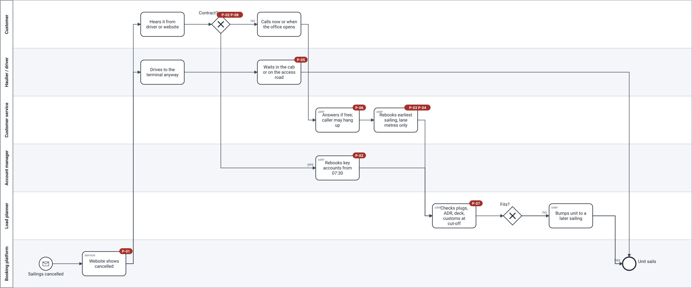
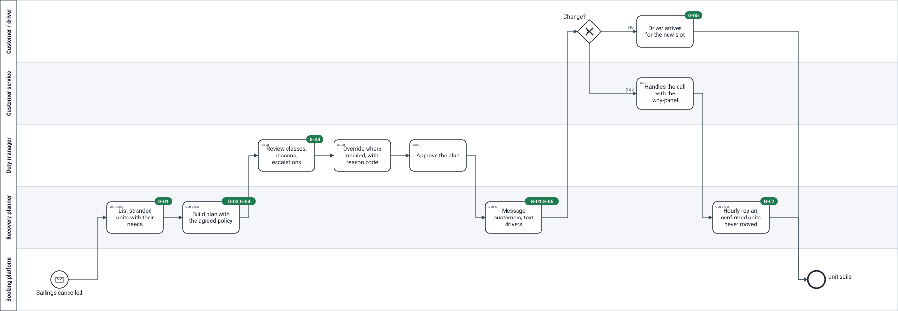

Storm Night / Process
From the wall to the model
A big-picture event storming of the storm night, then the AS-IS and TO-BE in BPMN 2.0. Red badges mark where each pain happens; green badges mark which goal a TO-BE step serves.
Event storming — the storm night (AS-IS)
- Domain event
- Command
- Actor
- Policy
- Read model
- Hotspot
Thu 16:00
Master + operations director
Sailings cancelled
Cancellation published on website
Nobody has the list of stranded units (7 votes)
Thu evening
Customer
Customer called
Rebook unit
Booking screen: lane metres only
Unit rebooked
Order = who calls first (6 votes)
Thu night
Haulier
Haulier arrived at gate
Yard full
Hauliers come anyway (4)
Customer withdrew unit
Fri 07:30
Account manager
Account managers started
Key account rebooked
Key accounts handled last, not first
Cut-off −90 min
Load planner
Plug / ADR spreadsheet
Cut-off reached
Unit bumped: no plug / ADR / deck / customs
Constraints found at cut-off (6)
Perishable not known (4)
Departure
Sailing departed with space left
Unit sailed
Who presses send? (3)
TO-BE draft
Whenever sailings are cancelled, list the stranded units
Build recovery plan
Recovery board
Duty manager
Approve plan
Whenever a plan is approved, message customers and text drivers
Every hour, plan what is still open; never move a confirmed unit
Hotspots with votes and who decided each: event storming document.
AS-IS — a storm night today

TO-BE — the recovery plan (release 1)
